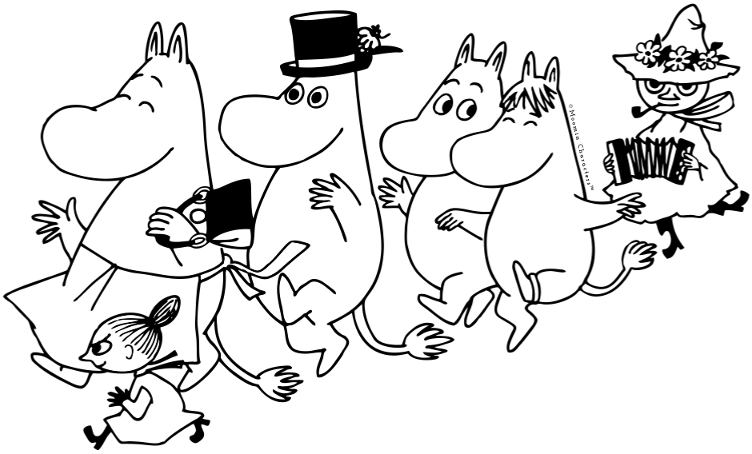

Welcome to the one and only Moomin character personality test.
Just answer 10 easy questions and you’ll know which one of the
Moomin characters is your best match. Then challenge your friends by
sharing your quiz result on Facebook, Twitter or Pinterest.
Have fun!